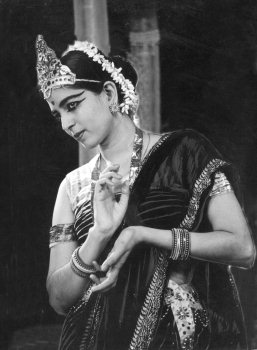

Life before marriage
Rukmini Devi was born in a brahmin family on 29 February 1904 in Madurai of Tamilnadu. Her father, Neelakanta Shastri, was an engineer with the Public Works Department and a scholar, and her mother Seshammal was a music enthusiast. He had a transferable job and the family moved frequently. He was introduced to the Theosophical Society in 1901. Her brother, Nilakanta Sri Ram, later became the President of the Theosophical Society. Deeply influenced by the Theosophical Movement as a follower of Dr Annie Besant, Neelakanta Shastri moved to Adyar, Chennai after retirement, where he built his home near the headquarters of the Theosophical Society Adyar. It was here that young Rukmini was exposed to not just theosophical thought, but also to new ideas on culture, theatre, music, and dance. Her meeting with the prominent British theosophist Dr George Arundale—a close associate of Annie Besant and later the principal of the Central Hindu College in Varanasi—led to her building a lasting bond with him. They married in 1920 when she turned 16 and he was 26 years her senior at 42, much to the shock of the then conservative society.After marriage, she traveled around the world, meeting fellow theosophists and also forging friendships with the educator Maria Montessori, and the poet James Cousins. In 1923, she became the President of the All-India Federation of Young Theosophists, and the President of the World Federation of Young Theosophists in 1925. In 1928, the famous Russian ballerina Anna Pavlova visited Bombay and the Arundale couple went to her performance, and later happened to travel on the same ship as her, to Australia where she was to perform next; over the course of the journey their friendship grew, and soon Rukmini Devi started learning dance from one of Anna's leading solo dancers, Cleo Nordi. It was later, at the behest of Anna, that Rukmini Devi turned her attention to discovering traditional Indian dance forms which had fallen to disrepute, and dedicated the rest of her life to their revival.
In 1933, at the Annual Conference of Madras Music Academy, she saw for the first time, a performance of the dance form called the Sadhir. Later she learnt the dance from Mylapore Gowri Amma and finally with the help of E Krishna Iyer from 'Pandanallur Meenakshi Sundaram Pillai'. In 1935, Rukmini Devi gave her first public performance at the 'Diamond Jubilee Convention of the Theosophical Society.
In January 1936, she along with her husband, established Kalakshetra, an academy of dance and music, built around the ancient Indian Gurukul system, at Adyar, at Chennai. Today the academy is a deemed university under the Kalakshetra Foundation and is situated in its new in 100-acre (0.40 km2) campus in Tiruvanmiyur, Chennai, where it shifted, in 1962. Amongst its noted students are Radha Burnier, Sarada Hoffman, Anjali Mehr, Kamaladevi Chattopadhyay, Sanjukta Panigrahi, C V Chandrasekhar, Yamini Krishnamurthy and Leela Samson.
Originally known as sadhir, the Indian classical dance form of Bharatanatyam owes its current name, to E Krishna Iyer and Rukmini Devi Arundale, who has been instrumental in modifying mainly the Pandanallur style of Bharatanatyam and bringing it to the global attention, and removing the extraneous sringaar and erotic elements from the dance, which were the legacy of its Devadasi association in the past.[18][19] Soon she changed the very face of the dance, by introducing musical instruments, like violin,[20] set and lighting design elements, and innovative costumes, and jewellery inspired by the temple sculptures.[21] Just as for her teacher she approached noted gurus in various arts and classical dances, for her productions, Rukmini Devi approached noted scholars for inspiration and classical musicians and artists, for collaboration, the result was the creation some of pioneering dance dramas-based on Indian epics like the Valmiki's Ramayana and Jayadeva's Gita Govinda.[22] Starting with famous dance dramas like, 'Sita Swayamvaram', 'Sri Rama Vanagamanam', 'Paduka Pattabhishekam' and 'Sabari Moksham', followed by 'Kutrala Kuruvanji', 'Ramayana', 'Kumara Sambhavam', 'Gita Govindam' and 'Usha Parinayam'.
Schools based on the Montessori method were first started in India,[24] when Dr George Arundale invited Dr Maria Montessori to start courses in the 'Besant Theosophical High School' in 1939, and later also established, the 'Besant Arundale Senior Secondary School', The College of Fine Arts, The Besant Theosophical High School, The Maria Montessori School for Children, The Craft Education and Research Centre and the U V Swaminatha Iyer Library, within the Kalakshetra campus.
Last years
Rukmini Devi was nominated as a member of the Indian Parliament's Council of States (the Rajya Sabha) in April 1952 and re-nominated in 1956. She was the first Indian woman to be nominated in Rajya Sabha.[25] Keenly interested in animal welfare, she was associated with various humanitarian organisations, and as a member of the Rajya Sabha, was instrumental for the legislation for the Prevention of Cruelty to Animals Act and for later setting up of the Animal Welfare Board of India, under her chairmanship in 1962.[26] She remained on the board until her demise in 1986. She did much work to promote vegetarianism in the country. She was vice-president of International Vegetarian Union for 31 years from 1955, until her death. In 1977, Morarji Desai offered to nominate her for the post of President of India, which she turned down. In 1978, 'Kalamkari Centre' (pencraft) was set up at Kalakshetra to revitalise the ancient Indian craft of textile printing. On encouragement from Kamaladevi Chattopadhyay, she encouraged natural dyeing and weaving at Kalakshetra. She died on 24 February 1986 in Chennai.
Awards and honours
- Padma Bhushan (1956)
- Sangeet Natak Akademi Award
- Desikothama (1972), Viswa Bharati University
- 1967 Sangeet Natak Akademi Fellowship
- Prani Mitra (1968), Friend of All Animals, (Animal Welfare Board of India)
- Kalidas Samman (1984), Govt of Madhya Pradesh
- D. Lit. (Honoris Causa), Indira Kala Sangit Vishwavidyalaya, Khairagarh, Chhattisgarh
- Queen Victoria Silver Medal, Royal Society for the Prevention of Cruelty to Animals, London
- Addition to the roll of honour by The World Federation for the Protection of animals, The Hague
- Honorary Doctorate, Wayne State University, United States
- Scrolls of Honour, County and City of Los Angeles